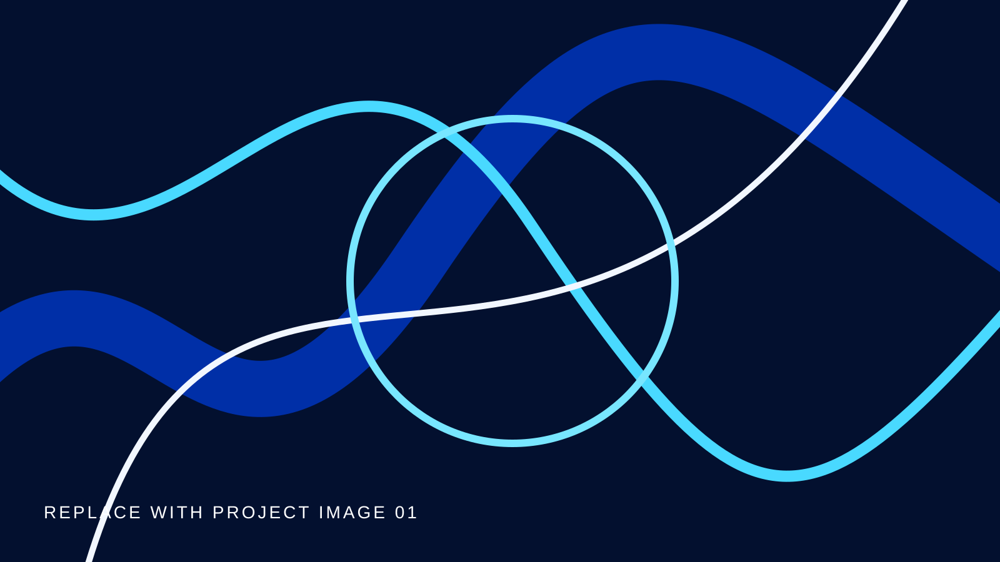
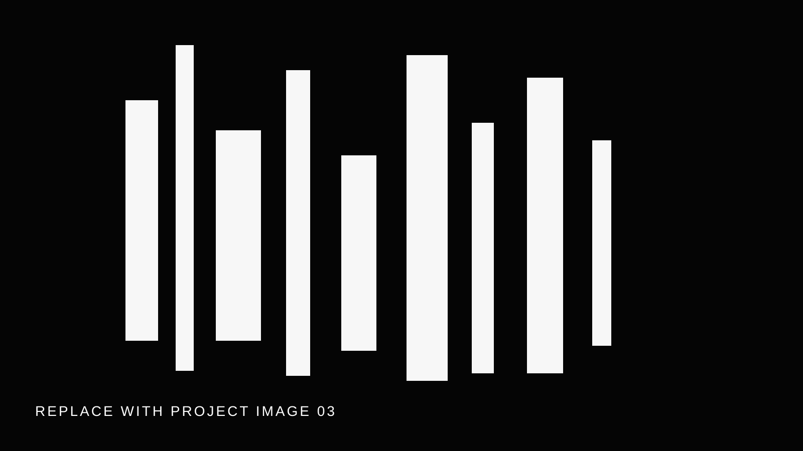
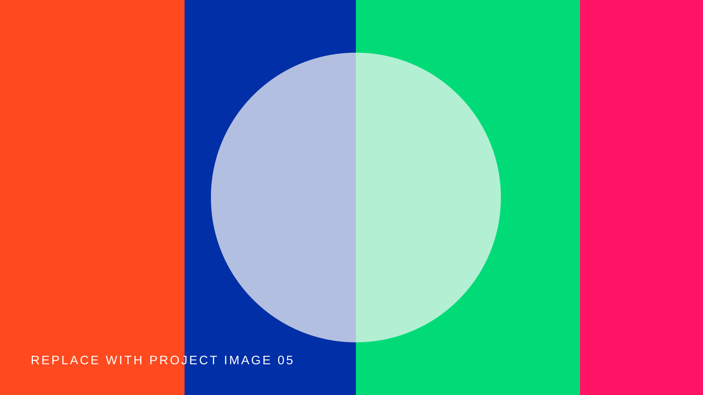

Light Study 01
A small observation around visible systems.
Small experiments, visual studies, notes, and work-in-progress.

A small observation around visible systems.

Fragments from a collective interaction experiment.
A moving-image test made with emerging tools.

Chromatic fragments collected between moving image studies.